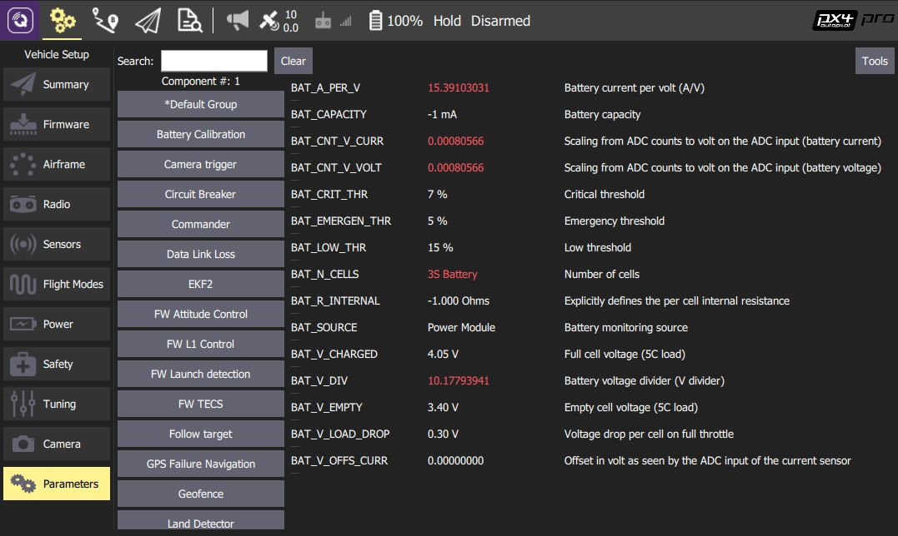
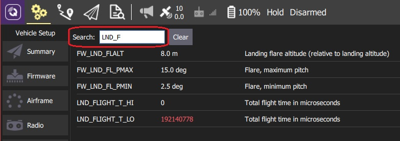

Parameters
The Parameters screen allows you to find and modify any of the parameters associated with the vehicle.

PX4 Pro and ArduPilot use different parameter sets, but they are both managed as described in this section.
Finding a Parameter
The parameters are organized in groups. Select a group of parameters to view by clicking on the buttons to the left (in the image above the Battery Calibration group is selected).
You can also search for a parameter by entering a term in the Search field. This will show you a list of all parameter names and descriptions that contain the entered substring (press Clear to reset the search).

Changing a Parameter
To change the value of a parameter click on the parameter row in a group or search list. This will open a side dialog in which you can update the value (this dialog also provides additional detailed information about the parameter - including whether a reboot is required for the change to take effect).

When you click Save the parameter is automatically and silently uploaded to the connected vehicle. Depending on the parameter, you may then need to reboot the flight controller for the change to take effect.
Tools
You can select additional options from the Tools menu on the top right hand side of the screen.

Refresh
Refresh the parameter values by re-requesting all of them from the vehicle.
Reset all to defaults
Reset all parameters to their original default values.
Load from file / Save to file
Load parameters from an existing file or save your current parameter settings to a file.
Clear RC to Param
This clears all associations between RC transmitter controls and parameters. For more information see: Radio Setup > Param Tuning Channels.
Reboot Vehicle
Reboot the vehicle (required after changing some parameters).